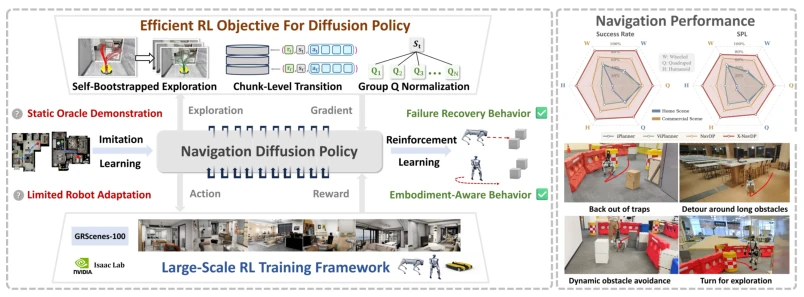
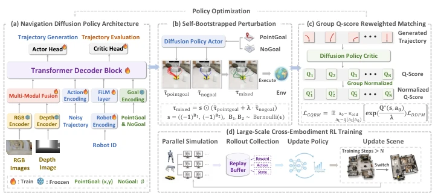
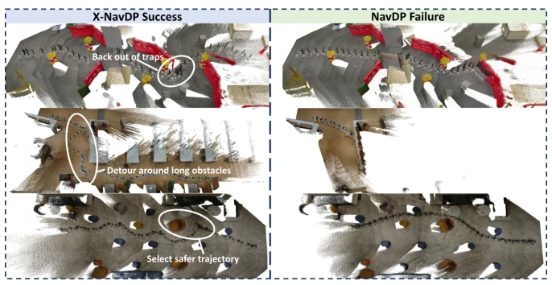
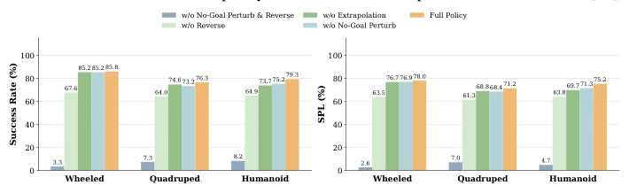

This paper injects a potent RL intervention into the navigation task of Diffusion Policy. Although pre-trained models like NavDP can perform zero-shot, they struggle when encountering dead ends or switching robots. The authors developed a GQRM framework using RL fine-tuning, yielding impressive results: simulation success rates increased from 61% to 84%, while real-world performance improved from 10% to 65%. However, this method relies on low-level controllers; switching robots requires reconfiguring the locomotion policy, and it remains ineffective against transparent obstacles. Overall, this represents a critical step for Diffusion navigation from "only walking straight" to "knowing how to detour", though it still falls short of general embodied intelligence. It demonstrates that RL post-training can compensate for the blind spots of imitation learning, but computational overhead and hardware dependency remain significant drawbacks, constituting a "practical but not elegant" improvement.
Existing visual navigation primarily relies on Imitation Learning (IL), depending on global optimal trajectories [1]. However, this causes policies to fail to adapt to local observations, becoming ineffective when encountering dead ends or needing to detour around long obstacles. Furthermore, pre-trained data often targets a single robot, resulting in poor cross-embodiment generalization. Although some have attempted to fine-tune diffusion policies using RL [10], directly computing likelihood gradients is unstable [13, 14], or frozen parameters limit exploration [15]. Reweighting methods such as DPMD [16] are stable, but global Q-score normalization provides insufficient signal in hard states, failing to effectively learn recovery behaviors. Therefore, a RL post-training framework that can both stabilize optimization and stimulate diverse exploration is needed.

Figure 1: We develop an RL post-training framework that improves pretrained navigation diffusion policies in general navigation and obstacle avoidance, strengthens cross-embodiment navigation, and enables new skills such as failure recovery.
The overall framework is built upon NavDP [1] for RL post-training. The core is the GQRM module. First, Self-Bootstrapped Perturbation is used to enhance exploration: mixing Goal-conditioned and Goal-agnostic trajectories, even flipping directions, to generate diverse candidate behaviors and avoid conservatism. Second, GQRM improves the reweighting mechanism of DPMD [16]. Traditional DPMD normalizes Q-scores between batches, causing signals from hard examples to be drowned out. GQRM changes to within-group normalization, calculating local advantages, allowing the policy to focus more on relative merits under the current state rather than global absolute values. Finally, robot ID embeddings are injected via FiLM layers to achieve shared weight fine-tuning across embodiments (wheeled, quadruped, humanoid). During inference, RTC-style temporal consistency guidance is added to reduce trajectory jitter.

Figure 2: Overview of the X-NavDP pipeline. (a) We adopt the NavDP backbone and inject em- bodiment information via FiLM layers. (b) A structured trajectory perturbation scheme mixes goal- conditioned and goal-agnostic samples for efficient exploration (denoted as pointgoal and nogoal in the figure, respectively). (c) Within-group Q-score normalization produces adaptive weights for reweighted score matching. (d) The framework enables large-scale cross-embodiment RL.
Tests were conducted in IsaacLab simulations and real-world environments. Simulations used 40 unseen scenes, comparing NavDP [1], NavDP-RL [10], etc. X-NavDP achieved an SR of 84.28% and SPL of 77.19% in simulation, significantly outperforming the baseline. Real-world deployment without Sim-to-Real fine-tuning improved success rates from 10% to 65%. Ablation experiments show that removing No-Goal perturbation or reverse exploration leads to training collapse, proving diversity exploration is key. GQRM's within-group normalization performs better than global normalization on hard examples. Failure cases were mainly concentrated in humanoid robot narrow passages and transparent obstacle perception, indicating the perception module still requires strengthening.

Figure 3: Qualitative trajectory comparison. X-NavDP produces recovery, detour, and safer behav- iors that are absent from the NavDP policy. The visualization is provided with VGGT-Ω[42].

Figure 4: Ablation study on exploration policies. The results demonstrate that no-goal perturbation and trajectory reversal are two critical designs for policy learning.